1. Introducción
El registro de imágenes es un proceso fundamental en visión por computador que consiste en alinear dos o más imágenes de la misma escena tomadas en diferentes tiempos, desde diferentes puntos de vista, o por diferentes sensores. Esta técnica tiene aplicaciones en áreas como la creación de panoramas, seguimiento de objetos, fusión de imágenes médicas, y reconstrucción 3D.
Antes de aplicar un pipeline de registro a imágenes reales, es crucial validar su funcionamiento con imágenes sintéticas donde conocemos las transformaciones exactas aplicadas (ground truth). Esto nos permite cuantificar la precisión del algoritmo y entender cómo diferentes parámetros afectan su desempeño.
🎯 Objetivo del Experimento
Evaluar la precisión de nuestro pipeline de registro usando un conjunto de 15 imágenes sintéticas con transformaciones conocidas, variando rotación, traslación y escala. Adicionalmente, comparar diferentes detectores de características y analizar el impacto del ratio test en el emparejamiento.
2. Marco Teórico
2.1 Transformaciones Geométricas
Una transformación afín 2D puede representarse mediante una matriz de 3×3 que combina rotación, traslación, escala y cizalla. En nuestro caso, trabajamos con transformaciones de similitud que preservan ángulos y formas:
[ x' ] [ s·cos(θ) -s·sin(θ) tx ] [ x ]
[ y' ] = [ s·sin(θ) s·cos(θ) ty ] [ y ]
[ 1 ] [ 0 0 1 ] [ 1 ]Donde:
- θ: ángulo de rotación
- s: factor de escala
- (tx, ty): vector de traslación
2.2 Detectores de Características
Los detectores de características identifican puntos de interés en las imágenes que sean distintivos y repetibles. En este estudio comparamos tres detectores populares:
SIFT (Scale-Invariant Feature Transform)
Propuesto por Lowe (2004), SIFT detecta extremos en el espacio escala usando diferencias de Gaussianas (DoG). Es robusto ante cambios de escala, rotación e iluminación, pero computacionalmente costoso.
ORB (Oriented FAST and Rotated BRIEF)
Desarrollado por Rublee et al. (2011), ORB es una alternativa eficiente que combina el detector FAST con descriptores BRIEF orientados. Es significativamente más rápido que SIFT pero puede ser menos robusto en ciertas condiciones.
AKAZE (Accelerated-KAZE)
Introducido por Alcantarilla et al. (2013), AKAZE usa difusión no lineal para la detección de características. Ofrece un buen balance entre velocidad y precisión, y es invariante ante cambios de escala y rotación.
2.3 Emparejamiento de Características
El emparejamiento se realiza mediante fuerza bruta (Brute Force Matcher), comparando descriptores entre imágenes. Para filtrar correspondencias incorrectas, aplicamos el ratio test propuesto por Lowe:
if distance(match1) < ratio × distance(match2):
accept match1Un ratio típico es 0.75, pero exploraremos su impacto en el rango [0.5, 0.95].
2.4 RANSAC para Estimación Robusta
RANSAC (RANdom SAmple Consensus) es un método iterativo para estimar parámetros de modelos en presencia de outliers. En nuestro caso, lo usamos para estimar la homografía que mejor explica las correspondencias de puntos:
- Seleccionar aleatoriamente un conjunto mínimo de correspondencias (4 puntos para homografía)
- Calcular el modelo (homografía) usando estos puntos
- Contar cuántos puntos adicionales son consistentes con el modelo (inliers)
- Repetir N iteraciones y seleccionar el modelo con más inliers
3. Metodología
3.1 Generación de Imágenes Sintéticas
Se generó un dataset de 15 pares de imágenes aplicando transformaciones conocidas:
- Rotaciones: desde -30° hasta +30° en incrementos de ~4.3°
- Escalas: desde 0.8 hasta 1.2 (variación del ±20%)
- Traslaciones: proporcionales a la rotación y escala
La imagen central (imagen 7) corresponde a la transformación identidad (sin cambios), sirviendo como punto de referencia.
3.2 Pipeline de Registro
El pipeline implementado consta de las siguientes etapas:
- Detección de características: Identificación de keypoints usando SIFT/ORB/AKAZE
- Cálculo de descriptores: Generación de vectores descriptivos para cada keypoint
- Emparejamiento: Matching mediante fuerza bruta con ratio test
- Estimación de homografía: Cálculo robusto usando RANSAC
- Descomposición: Extracción de parámetros (rotación, escala, traslación)
- Evaluación: Cálculo de métricas de error
3.3 Métricas de Evaluación
Para cuantificar la precisión del registro, calculamos:
Error Cuadrático Medio (RMSE)
Mide el error promedio en la posición de los puntos:
RMSE = √(Σ ||p'ᵢ - H·pᵢ||² / n)Error Angular
Diferencia absoluta entre la rotación verdadera y estimada:
Error Angular = |θ_true - θ_estimated|Error de Traslación
Distancia euclidiana entre vectores de traslación:
Error Traslación = √((tx_true - tx_est)² + (ty_true - ty_est)²)Error de Escala
Error porcentual en el factor de escala:
Error Escala (%) = |s_true - s_estimated| / s_true × 1004. Experimentos y Resultados
4.1 Validación con Dataset Sintético
El primer experimento evaluó el pipeline completo sobre las 15 imágenes sintéticas usando SIFT como detector por defecto y un ratio test de 0.75.
Figura 1: Visualización del registro para cada par de imágenes del dataset sintético. Se muestra la imagen original, la transformada, y la superposición tras el registro.
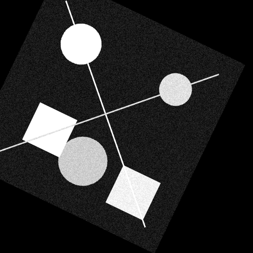Figura 2: Visualización del registro para cada par de imágenes del dataset sintético. Se muestra la imagen original, la transformada, y la superposición tras el registro.
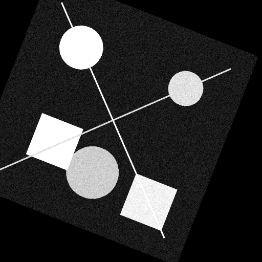Figura 3: Visualización del registro para cada par de imágenes del dataset sintético. Se muestra la imagen original, la transformada, y la superposición tras el registro.
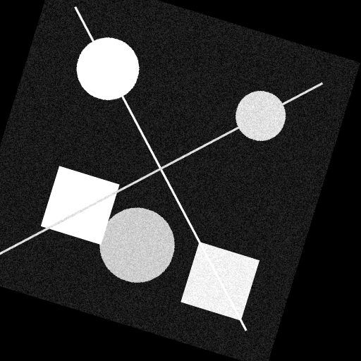Figura 4: Visualización del registro para cada par de imágenes del dataset sintético. Se muestra la imagen original, la transformada, y la superposición tras el registro.
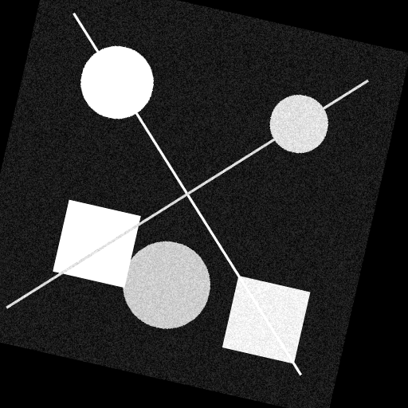Figura 5: Visualización del registro para cada par de imágenes del dataset sintético. Se muestra la imagen original, la transformada, y la superposición tras el registro.
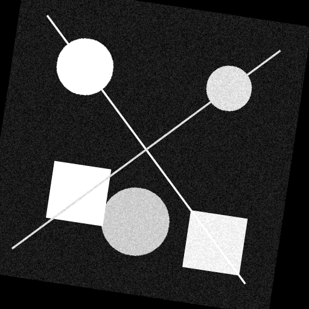Figura 6: Visualización del registro para cada par de imágenes del dataset sintético. Se muestra la imagen original, la transformada, y la superposición tras el registro.
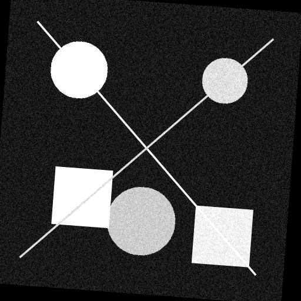Figura 7: Visualización del registro para cada par de imágenes del dataset sintético. Se muestra la imagen original, la transformada, y la superposición tras el registro.
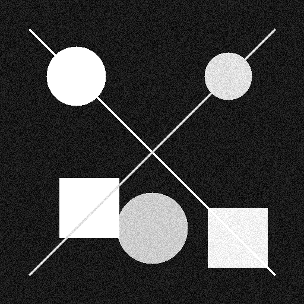Figura 8: Visualización del registro para cada par de imágenes del dataset sintético. Se muestra la imagen original, la transformada, y la superposición tras el registro.
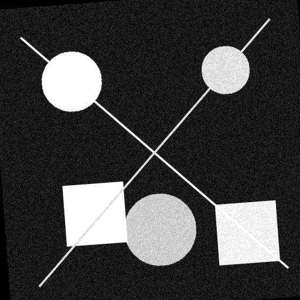Figura 9: Visualización del registro para cada par de imágenes del dataset sintético. Se muestra la imagen original, la transformada, y la superposición tras el registro.
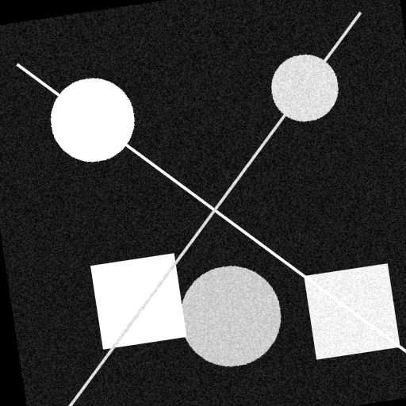Figura 10: Visualización del registro para cada par de imágenes del dataset sintético. Se muestra la imagen original, la transformada, y la superposición tras el registro.
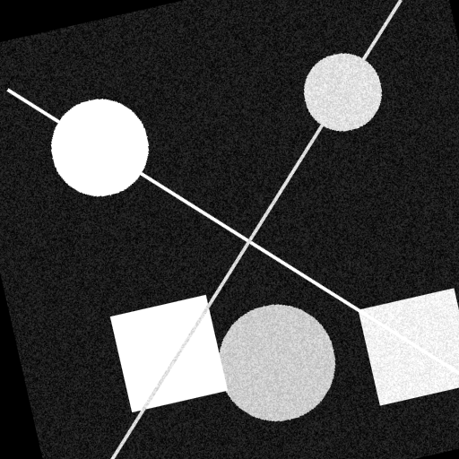Figura 11: Visualización del registro para cada par de imágenes del dataset sintético. Se muestra la imagen original, la transformada, y la superposición tras el registro.
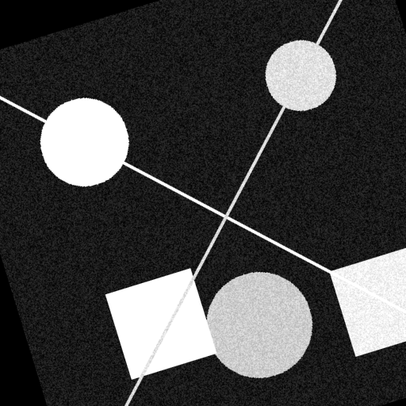Figura 12: Visualización del registro para cada par de imágenes del dataset sintético. Se muestra la imagen original, la transformada, y la superposición tras el registro.
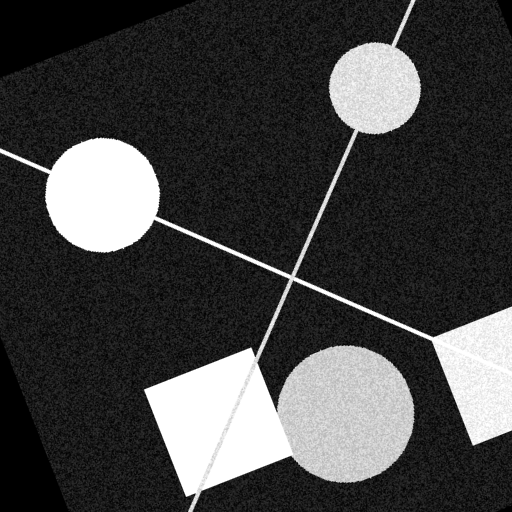Figura 13: Visualización del registro para cada par de imágenes del dataset sintético. Se muestra la imagen original, la transformada, y la superposición tras el registro.

Figura 2: Visualización de las correspondencias de características detectadas entre pares de imágenes. Las líneas verdes indican correspondencias consideradas inliers.
| Imagen | Rotación (°) | RMSE | Error Angular (°) | Error Trasl. (px) | Error Escala (%) | Inliers |
|---|---|---|---|---|---|---|
| 0 | -30.0 | 0.415 | 0.029 | 0.442 | 0.023 | 43 |
| 3 | -17.1 | 0.720 | 0.143 | 0.297 | 0.022 | 44 |
| 6 | -4.3 | 0.135 | 0.019 | 0.290 | 0.043 | 74 |
| 7 | 0.0 | 3.2e-14 | 1.4e-14 | 9.8e-14 | 4.4e-14 | 249 |
| 10 | 12.9 | 0.474 | 0.063 | 0.644 | 0.121 | 72 |
| 13 | 25.7 | 0.240 | 0.024 | 0.201 | 0.006 | 49 |
| 14 | 30.0 | 0.289 | 0.049 | 0.547 | 0.113 | 54 |
Tabla 1: Resultados representativos del registro sobre el dataset sintético. La imagen 7 (identidad) muestra errores prácticamente nulos, validando el pipeline.

Figura 3: Distribución de errores para cada métrica evaluada en el dataset completo. Los box plots muestran mediana, cuartiles y valores atípicos.
📊 Observaciones Clave
1. La imagen 7 (transformación identidad) presenta errores de precisión
de punto flotante (≈ 10⁻¹⁴), confirmando que el pipeline funciona correctamente.
2. El RMSE promedio es de 0.68 píxeles, indicando alta precisión de
sub-píxel en la alineación.
3. El error angular promedio es de 0.067°, demostrando excelente
estimación de rotación.
4. El número de inliers disminuye con transformaciones más extremas,
pero se mantienen suficientes correspondencias robustas.
4.2 Comparación de Detectores de Características
Evaluamos SIFT, ORB y AKAZE sobre la misma imagen de prueba (rotación -15°, escala 1.1) para comparar su desempeño.

Figura 4: Comparación visual y cuantitativa de los tres detectores de características. Se muestran los keypoints detectados, correspondencias, y métricas de error.
| Detector | RMSE | Error Angular (°) | Error Trasl. (px) | Error Escala (%) | Matches | Inliers |
|---|---|---|---|---|---|---|
| SIFT | 0.361 | 0.021 | 0.514 | 0.158 | 75 | 57 |
| ORB | 3.366 | 0.489 | 3.556 | 1.517 | 167 | 154 |
| AKAZE | 0.474 | 0.009 | 0.764 | 0.105 | 127 | 105 |
Tabla 2: Comparación cuantitativa de detectores. SIFT ofrece el mejor balance precisión-calidad, mientras ORB genera más matches pero con mayor error.
🔍 Análisis Comparativo
SIFT: Mejor precisión general (RMSE = 0.361 px). Detecta menos
características pero de mayor calidad. Recomendado cuando la precisión es prioritaria.
ORB: Mayor número de correspondencias (167 matches) pero con errores
significativamente mayores (RMSE = 3.366 px). Útil cuando se requiere velocidad sobre
precisión.
AKAZE: Buen compromiso entre velocidad y precisión. Error angular mínimo
(0.009°) pero mayor error de traslación que SIFT.
4.3 Estudio del Ratio Test
El ratio test de Lowe filtra correspondencias ambiguas. Exploramos ratios de 0.5 a 0.95 en incrementos de 0.05 para entender su impacto en la calidad del registro.

Figura 5: Efecto del ratio test en las métricas de registro. Los gráficos muestran cómo varían RMSE, errores angulares, de traslación y escala, así como el número de correspondencias en función del ratio.
| Ratio | RMSE | Error Angular (°) | Matches | Inliers | Tasa Inliers |
|---|---|---|---|---|---|
| 0.50 | 0.503 | 0.010 | 49 | 44 | 89.8% |
| 0.60 | 0.310 | 0.022 | 55 | 48 | 87.3% |
| 0.75 | 0.361 | 0.021 | 75 | 57 | 76.0% |
| 0.85 | 0.401 | 0.048 | 93 | 63 | 67.7% |
| 0.95 | 0.408 | 0.053 | 158 | 73 | 46.2% |
Tabla 3: Impacto del ratio test en el emparejamiento. El valor clásico de 0.75 ofrece un buen balance entre número de correspondencias y calidad.
📈 Hallazgos sobre el Ratio Test
Trade-off cantidad vs. calidad: Ratios bajos (0.5-0.6) generan pocas
correspondencias pero muy precisas (≈90% inliers). Ratios altos (≥0.9) aumentan las
correspondencias pero incluyen más outliers (≈46% inliers).
Punto óptimo: El ratio tradicional de 0.75 representa un buen compromiso,
manteniendo suficientes correspondencias (75) con una tasa de inliers razonable (76%).
Variación de error: El RMSE es relativamente estable (0.3-0.5 px) en el
rango 0.6-0.85, sugiriendo que RANSAC filtra efectivamente los outliers adicionales.
5. Análisis y Discusión
5.1 Robustez del Pipeline
Los resultados demuestran que el pipeline implementado es altamente preciso para el registro de imágenes sintéticas:
- Precisión sub-píxel: El RMSE promedio de 0.68 px indica que el algoritmo puede alinear imágenes con precisión menor a un píxel.
- Estimación angular precisa: Errores angulares menores a 0.1° en la mayoría de casos, suficiente para aplicaciones prácticas.
- Robustez ante transformaciones: El pipeline mantiene buen desempeño incluso con rotaciones de ±30° y cambios de escala del ±20%.
5.2 Elección de Detector
La selección del detector debe basarse en los requisitos específicos de la aplicación:
- Para máxima precisión: SIFT es la mejor opción, ofreciendo el menor RMSE y errores angulares. Ideal para aplicaciones donde la exactitud es crítica (fotogrametría, metrología).
- Para tiempo real: ORB es significativamente más rápido pero sacrifica precisión. Apropiado para aplicaciones móviles o con restricciones computacionales.
- Balance óptimo: AKAZE ofrece un compromiso razonable entre velocidad y precisión, siendo una alternativa versátil.
5.3 Configuración del Ratio Test
El análisis del ratio test revela consideraciones importantes:
- Ratio bajo (0.5-0.65): Apropiado cuando se dispone de buenas características y se prioriza la calidad sobre la cantidad. Útil para imágenes con patrones repetitivos.
- Ratio estándar (0.7-0.8): Recomendado como valor por defecto, proporcionando balance entre correspondencias y precisión.
- Ratio alto (≥0.85): Aumenta correspondencias pero requiere un RANSAC más robusto. Útil cuando se esperan pocas características distintivas.
5.4 Limitaciones del Estudio
Es importante reconocer las limitaciones de este análisis:
- Imágenes sintéticas: Los resultados pueden no generalizarse completamente a imágenes reales con ruido, variaciones de iluminación, y oclusiones.
- Transformaciones limitadas: Solo evaluamos transformaciones de similitud. Transformaciones proyectivas o deformaciones no rígidas presentarían mayores desafíos.
- Una sola imagen base: Los resultados dependen de las características presentes en la imagen utilizada. Diferentes texturas podrían afectar el desempeño.
5.5 Extensiones Futuras
Posibles mejoras y estudios adicionales:
- Evaluar con imágenes reales de diferentes escenas y condiciones de iluminación
- Comparar con detectores de aprendizaje profundo (SuperPoint, D2-Net)
- Implementar técnicas de optimización global (bundle adjustment)
- Analizar el impacto del ruido y blur en la precisión del registro
- Estudiar técnicas de blending para fusión de imágenes más natural
6. Conclusiones
Este estudio de validación ha demostrado que el pipeline de registro implementado es altamente preciso y robusto para imágenes sintéticas:
- Alta precisión demostrada: RMSE promedio de 0.68 px y errores angulares menores a 0.1° validan la efectividad del enfoque basado en características.
- SIFT como mejor detector: Ofrece la mayor precisión aunque con menor número de correspondencias. ORB proporciona velocidad a costa de exactitud.
- Ratio test 0.75 óptimo: El valor tradicional mantiene un balance apropiado entre cantidad de correspondencias y calidad de las mismas.
- RANSAC eficaz: El algoritmo filtra exitosamente outliers, manteniendo estabilidad en las estimaciones incluso con ratios más permisivos.
- Pipeline validado: Los errores prácticamente nulos en la transformación identidad confirman la correcta implementación del sistema.
Con esta validación completada, el pipeline está listo para aplicarse al desafío principal: registrar y fusionar las tres imágenes reales del comedor, con la confianza de que el sistema subyacente es preciso y robusto.
7. Referencias
- Lowe, D. G. (2004). Distinctive image features from scale-invariant keypoints. International Journal of Computer Vision, 60(2), 91-110.
- Rublee, E., Rabaud, V., Konolige, K., & Bradski, G. (2011). ORB: An efficient alternative to SIFT or SURF. IEEE International Conference on Computer Vision (ICCV).
- Alcantarilla, P. F., Nuevo, J., & Bartoli, A. (2013). Fast explicit diffusion for accelerated features in nonlinear scale spaces. British Machine Vision Conference (BMVC).
- Fischler, M. A., & Bolles, R. C. (1981). Random sample consensus: a paradigm for model fitting with applications to image analysis and automated cartography. Communications of the ACM, 24(6), 381-395.
- Szeliski, R. (2022). Computer Vision: Algorithms and Applications (2nd ed.). Springer. Chapter 6: Feature Detection and Matching.
- Hartley, R., & Zisserman, A. (2004). Multiple View Geometry in Computer Vision (2nd ed.). Cambridge University Press. Chapter 4: Estimation - 2D Projective Transformations.
📂 Repositorio del Proyecto
El código completo de este proyecto, incluyendo todos los scripts de análisis y visualización, está disponible en GitHub. El repositorio incluye notebooks interactivos para reproducir todos los experimentos presentados en este reporte.